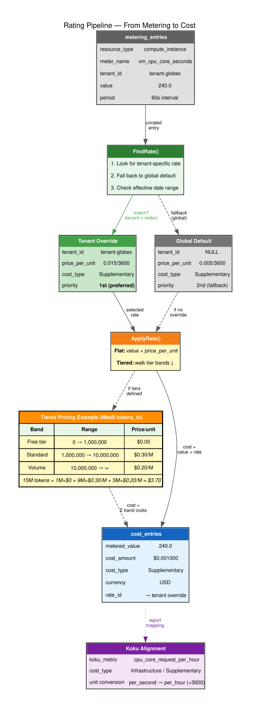

Demonstrating flat rates, tiered pricing, per-tenant overrides, and Koku-compatible cost classification.
All data from a live run of snippets/demo-rating-features.sh.
The system seeds 8 default rates on first startup. Each rate carries a cost_type (Infrastructure or Supplementary) and a koku_metric name for compatibility with Red Hat Cost Management (Koku).
| Resource Type | Meter Name | Cost Type | Koku Metric | Price/Unit | Currency |
|---|---|---|---|---|---|
| compute_instance | vm_uptime_seconds | Infrastructure | vm_cost_per_hour | $0.01/hr | USD |
| compute_instance | vm_cpu_core_seconds | Supplementary | cpu_core_request_per_hour | $0.005/hr | USD |
| compute_instance | vm_memory_gib_seconds | Supplementary | memory_gb_request_per_hour | $0.002/hr | USD |
| cluster | cluster_uptime_seconds | Infrastructure | cluster_cost_per_hour | $0.50/hr | USD |
| cluster | cluster_worker_node_seconds | Infrastructure | node_cost_per_month | $0.10/hr | USD |
| model | maas_tokens_in | Supplementary | — | $0.50/M | USD |
| model | maas_tokens_out | Supplementary | — | $1.50/M | USD |
| model | maas_requests | Supplementary | — | $5.00/M | USD |
These are global rates (tenant_id = NULL) — they apply to all tenants unless a tenant-specific override exists.
A VM heartbeat event arrives: 4 cores, 16 GiB, running for 60 seconds. The metering pipeline produces three entries, and the rating sweep applies flat rates to each.
| Meter | Metered Value | Unit | Rate | Cost |
|---|---|---|---|---|
| vm_uptime_seconds | 60.00 | seconds | $0.01/3600 | $0.000167 |
| vm_cpu_core_seconds | 240.00 | core·seconds | $0.005/3600 | $0.000333 |
| vm_memory_gib_seconds | 960.00 | GiB·seconds | $0.002/3600 | $0.000533 |
Tenant Globex gets a premium CPU rate — 3× the default. When FindRate() looks up the rate, it finds the tenant-specific override and uses it instead of the global default.
| Scope | Meter | Price/Unit | Description |
|---|---|---|---|
| Global default | vm_cpu_core_seconds | $0.005/hr | — |
| tenant-globex | vm_cpu_core_seconds | $0.015/hr | Premium CPU rate for Globex |
Both tenants run an identical VM (4 cores, 60 seconds = 240 core·seconds):
FindRate() query: ORDER BY tenant_id NULLS LAST — tenant-specific rates always take priority.
MaaS token pricing with volume discounts — a free tier, a standard tier, and a discounted volume tier:
| Scenario | Tokens In | Tier Breakdown | Cost |
|---|---|---|---|
| Small usage | 500,000 | All in free tier | $0.00 |
| Medium usage | 5,000,000 | 1M free + 4M × $0.30/M | $1.20 |
| Large usage | 15,000,000 | 1M free + 9M × $0.30/M + 5M × $0.20/M | $3.70 |
Tiers are stored as JSON in the rates.tiers JSONB column. The engine walks bands in order, consuming the metered value across each tier's up_to boundary.
Every cost entry inherits a cost_type from its rate definition. This enables the Infrastructure/Supplementary classification that Koku uses for cost reporting.
| Cost Type | Koku Metric | Entries | Total Cost |
|---|---|---|---|
| Infrastructure | vm_cost_per_hour | 6 | $0.000626 |
| Supplementary | cpu_core_request_per_hour | 6 | $0.001286 |
| Supplementary | memory_gb_request_per_hour | 6 | $0.002003 |
| Supplementary | (MaaS tokens) | 6 | $7.300000 |
The koku_metric column maps our internal meter names to Koku's metric identifiers. Unit conversion (per-second → per-hour) happens at rate sync time.

Cost Management AI Grid PoC — Rating Engine Demo
Reproduce with: bash snippets/demo-rating-features.sh